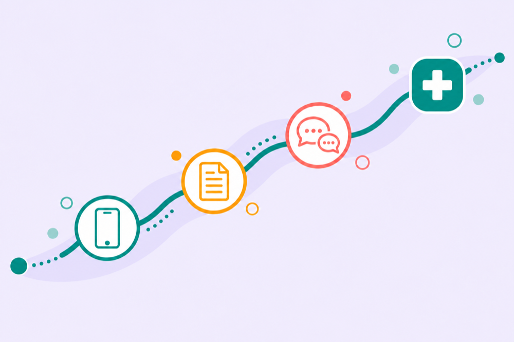

← Back to home
From the Field
Stories
Updates, reflections, and behind-the-scenes from the TACT team — co-design sessions, fieldwork, events, and lessons learned.

Research
Out and About: TACT ethnographic work has started
Our research has taken us onto the streets of London, spending time with people with aphasia in their everyday lives to understand where new technology might really help.
Read story →
Research
Getting to the appointment is only the beginning
A study with 23 people with aphasia and six healthcare professionals, mapping the communication work of getting through the healthcare journey and where better support could help.
Read story →
Research
We have an announcement to make: our Design Club begins
A new strand of research takes us into school, where a monthly Design Club explores communication with children through making, experimenting and trying things together.
Read story →